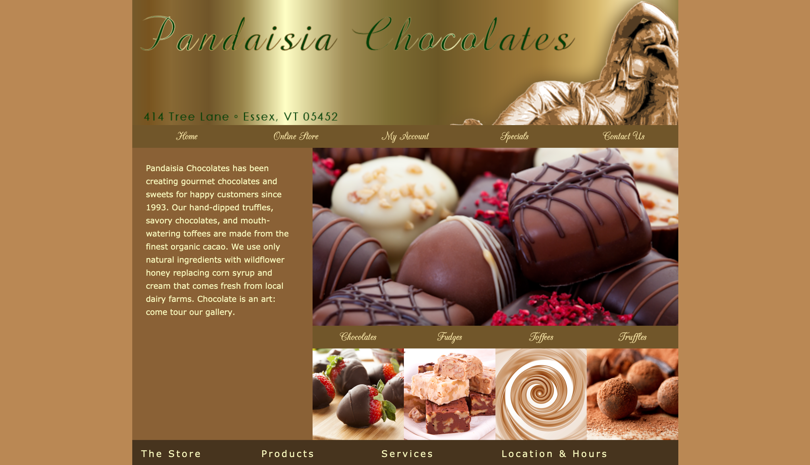
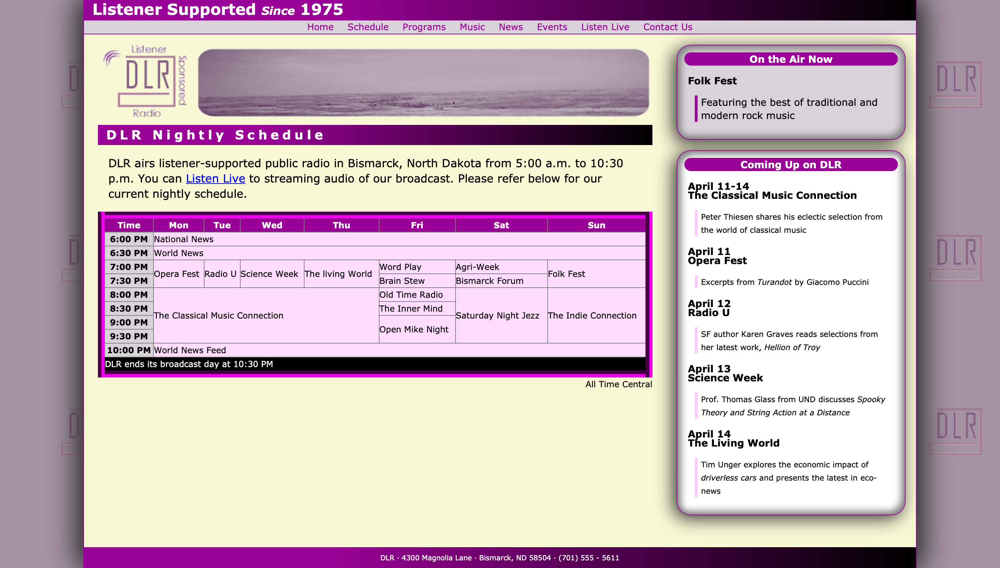
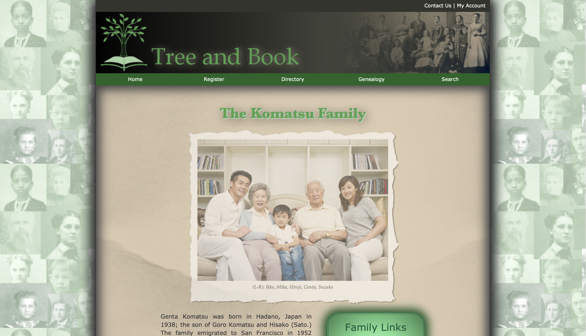
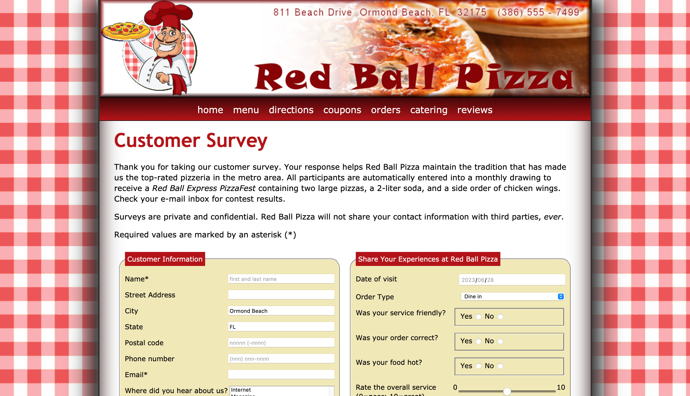
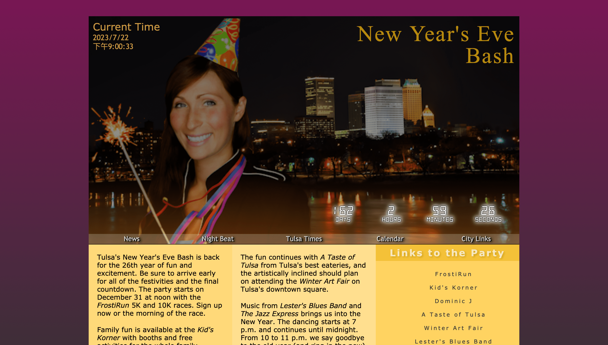
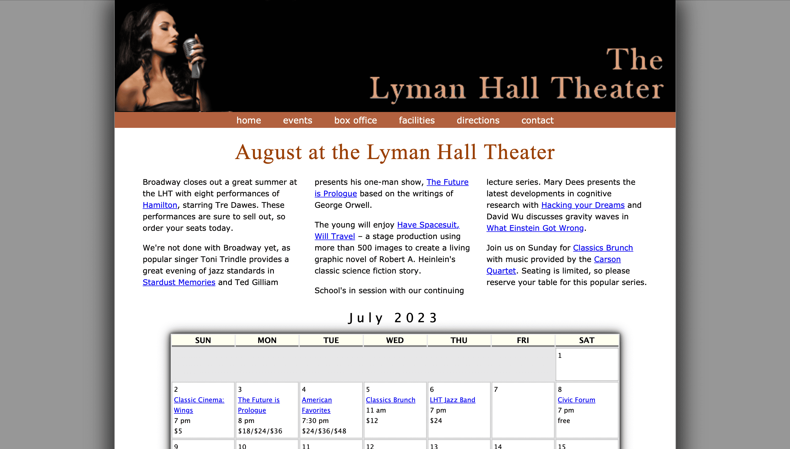
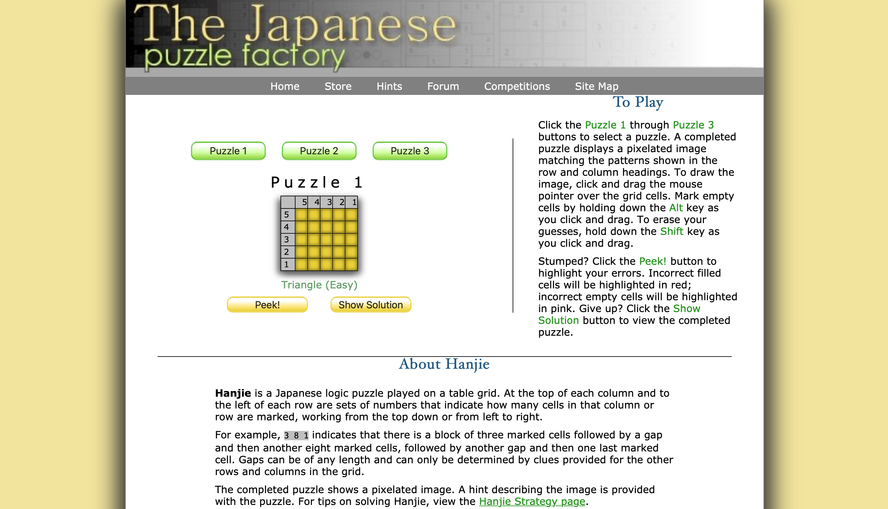
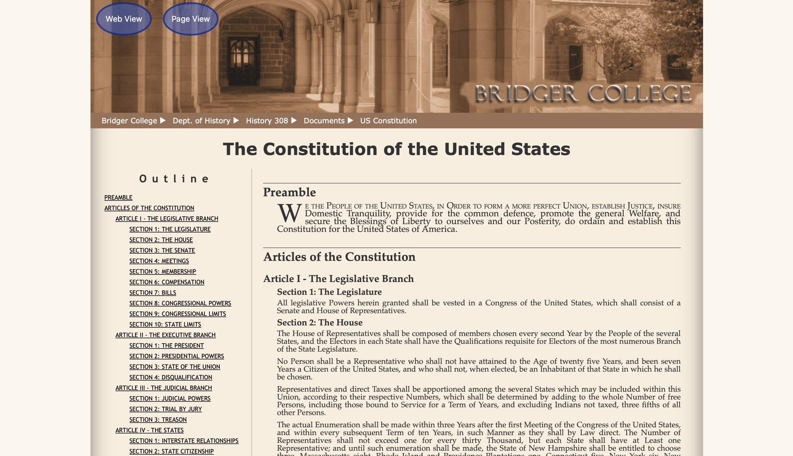
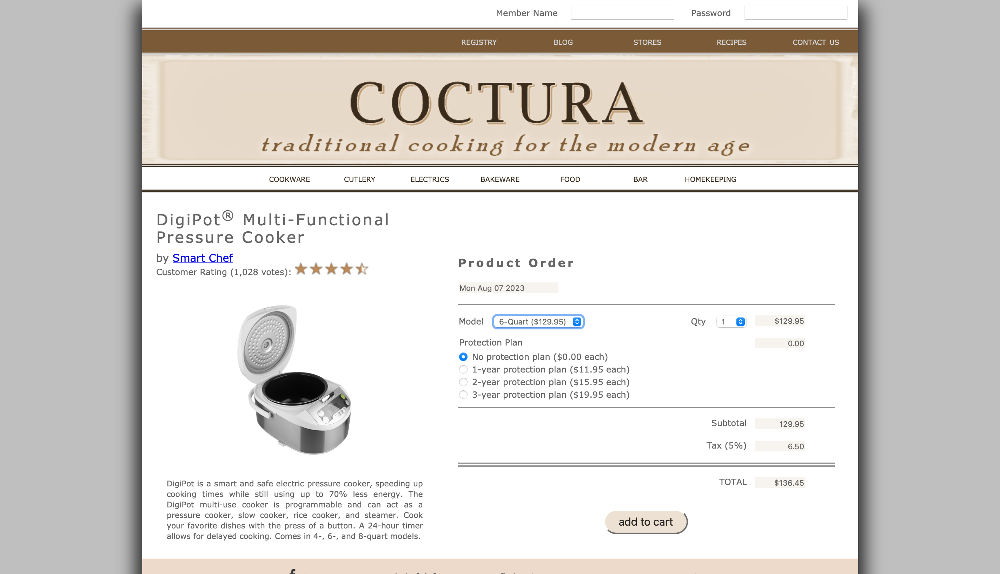

Module 2

2-1 Learn About CSS Layout: Pandaisia Chocolates
From this assignment, I learned about CSS layout and its various properties. I successfully implemented a reset stylesheet, linked all three stylesheets to the webpage, floated navigation items to the left, centered text within the navigation items, and handled container collapse. Overall, I gained valuable experience in designing and organizing web page layouts using CSS.

2-3 Learn About HTML Tables: Dakota Listener Radio
After completing the activities on HTML Tables, I have learned how to create structured tables using HTML tags, arrange data in separate columns and rows, apply CSS styles for enhanced appearance, and design informative and readable tables. These skills will enable me to present information effectively in table format on a website.
Module 3

3-1 Learn About Graphic Design: The Komatsu Family
After completing this assignment, I gained valuable insights in graphic design, enhancing visual appeal using CSS, creating cohesive designs, experimenting with techniques, and applying graphic design principles in web development. This experience deepened my understanding and will benefit my future endeavors.

3-4 Learn About Web Forms: Red Ball Pizza
After completing this assignment, I gained valuable knowledge in CSS and designing web forms. Through the case study, I learned how to create a prototype survey form for online customer feedback. I also acquired skills in implementing data validation tools to ensure accurate data entry. This experience provided insight into collecting, processing, and analyzing customer information effectively within a web form context.
Module 5

5-1 Learn About JavaScript: Tulsa's New Year's Bash
In this assignment, I learned JavaScript basics for creating interactive web pages. Through video tutorials and practical application, I mastered implementing a countdown clock for the New Year's Bash celebration. This knowledge enables me to enhance websites with dynamic elements and improved user experiences.

5-3 Learn About JS Arrays, Loops, and Conditions: Lyman Hall Theater
In this assignment, I learned about using arrays, loops, and if statements in JavaScript (JS). The videos provided step-by-step guidance, explaining these fundamental programming constructs in JS. The case study involved creating an event calendar application for Lyman Hall Theater, automating the generation of a web table for events in a given month. The prototype was developed for the month of July, providing a flexible solution for monthly updates.
Module 6

6-1 Learn About JavaScript Events & Styles: Japanese Puzzle Factory
Through these learning activities, I acquired a practical understanding of creating interactive web elements. By collaborating on the Japanese Puzzle Factory project, I grasped the concept of developing a dynamic hanjie puzzle. This involves manipulating a grid by marking cells based on user input and generating a visual output upon completion. The experience emphasized JavaScript's role in enabling puzzle selection, solution progression, and hint provision, showcasing its essential role in crafting engaging online experiences.

6-3 Learn About Working with Document Nodes & Style Sheets: Bridger College
In this assignment, I learned about working with Document Nodes and Styling using JavaScript. During the tutorial, I walked through the steps to create an outline for long documents, using the createElement and createTextNode functions to organize the content. I successfully implemented the createList function and learned how to loop through a nodelist. Additionally, I utilized attribute nodes and associated ids to elements automatically. It was exciting to see how these ids were used with href to create hypertext links for easy navigation. Lastly, I dynamically added stylesheets and buttons to enable style switching, which was a rewarding experience.

6-6 Learn About Programming For Web Forms: Coctura Home Kitchen
In this assignment, I explored form creation, data transfer between forms, and form data validation. Using URL parameters, I auto-populated fields in payment forms, calculated order costs, and applied currency formatting. I handled events for radio buttons and dropdowns, ensuring accurate user outputs. I successfully validated credit card details, including number, date, and CVC, ensuring proper form submission.